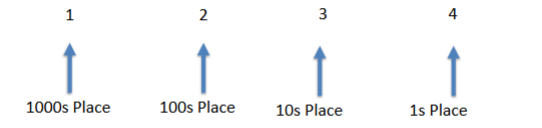
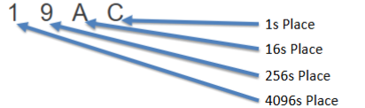
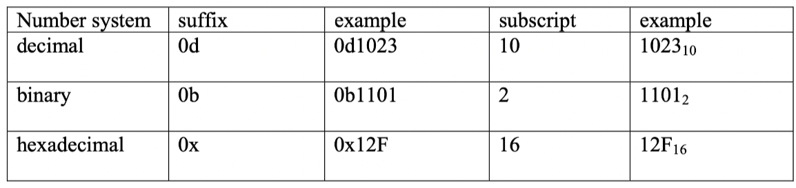

Decimal (Base 10)
The weight of each digit of a decimal number depends on its relative position within the number.
- (Ex.) Decoding of the baae-10 number 1234

The weight of each digit of a decimal number depends on its relative position within the number.

Fractions: Descending place, its magnitude is divided by 10.
A digit in binary(0 or 1) is also called a bit. Only these two digits are used in binary.
Like a decimal number, the "weight" of each binary digit in a binary number depends on its relative position.
For each ascending place, magnitude grows 2x.


| Base 10 | Binary (Base 2) | Hexadecimal (Base 16) |
|---|---|---|
| 0 | 0000 | 0 |
| 1 | 0001 | 1 |
| 2 | 0010 | 2 |
| 3 | 0011 | 3 |
| 4 | 0100 | 4 |
| 5 | 0101 | 5 |
| 6 | 0110 | 6 |
| 7 | 0111 | 7 |
| 8 | 1000 | 8 |
| 9 | 1001 | 9 |
| 10 | 1010 | A |
| 11 | 1011 | B |
| 12 | 1100 | C |
| 13 | 1101 | D |
| 14 | 1110 | E |
| 15 | 1111 | F |